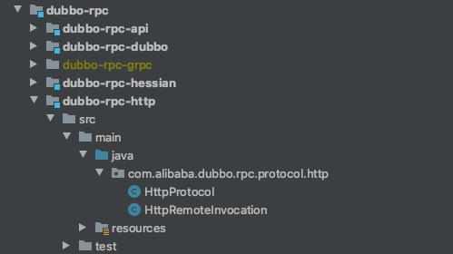
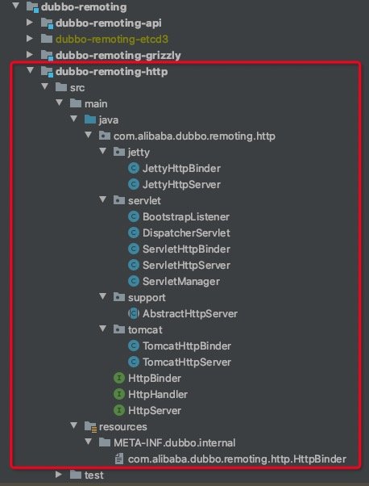
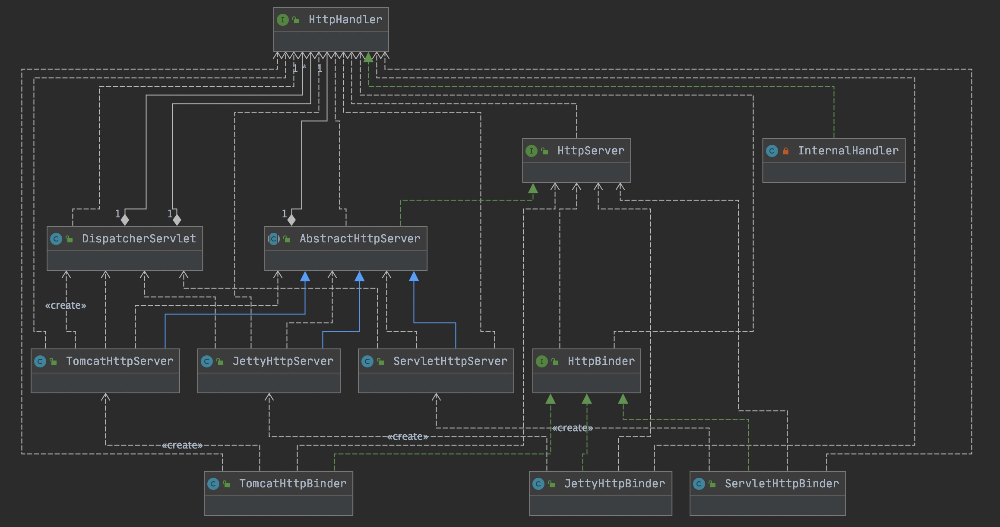
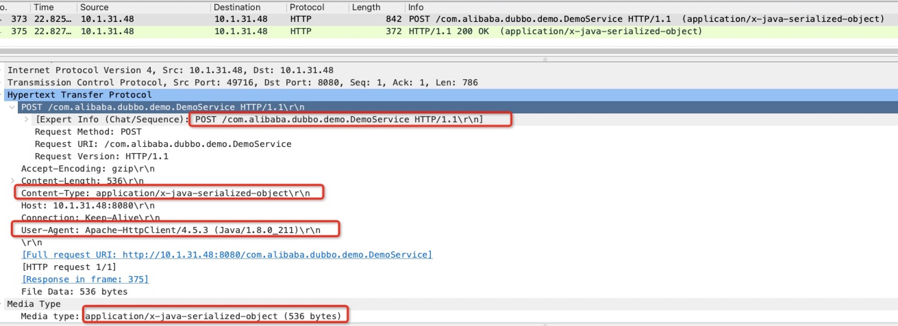
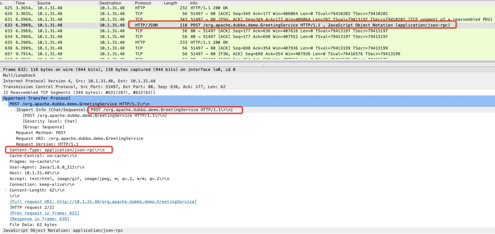
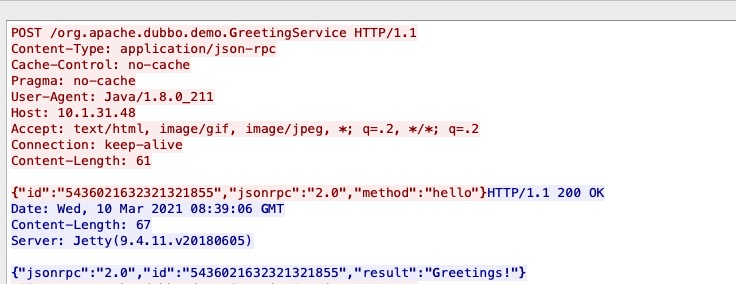

前言 RPC 实现
远程过程调用需要解决以下问题：
寻址：客户端调用的时候需要告诉服务端调用的是哪个服务、哪个方法、哪些参数以及附加属性。
序列化/反序列化：由于客户端和服务端不是同一个进程不能通过内存来传递参数，需要网络传输，因此客户端需要将参数序列化成字节流然后经网络传递给服务端，服务端收到字节流后反序列化为自己能读取的格式。序列化/反序列化可以使用 Hessian、Dubbo、Protobuf、JSON 等。
网络传输：客户端和服务端需要通过网络连接来传输数据，网络传输可以使用 Socket、TCP、UDP、HTTP、HTTP2 等。
HTTP
HTTP 请求调用本身也可以看作是 RPC 的一种具体形式，HTTP 请求也是从客户端发出请求到服务端，服务端执行具体逻辑，然后返回结果给客户端。HTTP 请求非常常见，一般开放服务给任意的一方调用，使用 HTTP API的形式是非常合适的。对于内部通信为了灵活、高效，可以根据实际需要自定制一套 RPC 框架，坏处就是没有那么通用。
JSON-RPC
JSON-RPC 是基于 JSON 的跨语言远程调用（RPC）协议，其 传输的内容以JSON方式 （注意，传输格式是二进制形式），相比 XML-RPC、WebService 等基于文本的协议传输数据格式小。相对 Dubbo、Hessian 等二进制协议，JSON-RPC 更便于调试、实现和扩展。目前主流语言几乎都基于 JSON-RPC 实现了框架，Java 中较好的 JSON-RPC 实现框架有 jsonrpc4j、jpoxy 以及 json-rpc ，其中 jsonrpc4j 既可单独使用，又可与 Spring 无缝整合。
二进制协议和文本协议
二进制协议需要通信双方约定协议的结构（如 Dubbo 协议的结构），发送方在发送数据前按照协议的结构组装数据然后序列化成字节流传送给对端，接收方收到字节流后按照协议的结构进行解析就可以了。文本协议（如 JSON-RPC协议）不需要通信双方约定协议结构，发送方只需将具体的文本数据（如 JSON数据）序列化成字节流发送到对端即可，接收方收到字节流后按照同样的文本格式（如 JSON）解析就可以了。
二进制协议的优点在于，进行数据转化时不需要包含定义数据的结构信息，相比文本协议要小；文本协议的优点在于不需要定义数据的传输格式，较为方便。需要说明的是，无论是二进制协议还是文本协议，都是以二进制数据形式进行网络传输的，区别在于二进制协议需要定制结构，而文本协议不需要。
协议和序列化
协议和序列化是不同的东西，它们之间属于组合关系，协议需要用到序列化技术，而序列化技术可以服务于不同的协议。
跨语言
跨语言调用一个重要的思路就是要有一个通用的协议，或者使用一定的策略完成协议适配，对于前者而言 HTTP 协议就是很好的选择，如异构语言对 SpringCloud 的调用只需提供 HTTP 客户端便可以实现跨语言调用。
跨语言难点在于 异构语言如何表示目标服务所需的数据类型 和 序列化方案如何做到跨语言 ，如 nodejs 对 dubbo 协议下的 Java 服务的调用是利用 dubbo2.js 组件来实现的，使用 js-to-java类库使得 node.js具备 Java 对象的表达能力，使用 hessian.js 提供了序列化能力，这样一来 nodejs 就能通过自己的 socket 发送一套 dubbo 协议的报文，最终实现服务调用。
概述 Dubbo 中支持的 HTTP 协议并非是通用的 HTTP协议 ，而是将 HTTP协议 与 Spring 结合使用，基于 HTTP 表单的远程调用协议，采用 Spring 的 HttpInvoker 实现，但在 Dubbo 的 2.7.x 版本中摒弃了 HttpInvoker 实现方式，代替的是将 HTTP协议 与 JSON-RPC 结合使用，实现跨语言调用的效果。
Dubbo 2.6.x 实现 Dubbo 2.6.x 版本中的 HTTP 协议是基于 HTTP 表单的远程调用协议 ，采用 Spring 的 HttpInvoker 实现。
特点
连接个数：多连接
配置
1 2 <dubbo:protocol name ="http" port ="8080" server ="jetty" />
当服务消费者向服务提供者发起调用时，底层便会使用标准的 HTTP 协议进行通信。在分析 Dubbo 2.6.x 版本中的 “HTTP协议” 之前，让我们先了解下 Spring 的 HttpInvoker 实现。
HttpInvoker 原生实现 服务提供者 1 2 3 4 5 6 7 @Service public class InvokerServiceImpl implements IInvokerService @Override public String sayHello (String msg) return "hello " + msg; } }
暴露服务 1 2 3 4 5 6 7 8 9 10 11 12 13 14 @Configuration public class HttpInvokerConfig @Bean ("/invokerService" ) public HttpInvokerServiceExporter httpInvokerServiceExporter (IInvokerService iInvokerService) HttpInvokerServiceExporter httpInvokerServiceExporter = new HttpInvokerServiceExporter(); httpInvokerServiceExporter.setService(iInvokerService); httpInvokerServiceExporter.setServiceInterface(IInvokerService.class ) ; return httpInvokerServiceExporter; } }
暴露服务逻辑如下：
服务消费者 1 2 3 ConfigurableApplicationContext applicationContext = SpringApplication.run(Application.class , args ) ; IInvokerService iInvokerService = applicationContext.getBean(IInvokerService.class ) ; System.out.println(iInvokerService.sayHello("shunhua!" ));
服务引用 1 2 3 4 5 6 7 8 9 10 11 12 13 14 15 16 17 18 @Configuration public class ClientConfig private String serviceUrl = "http://localhost:8080/上下文/invokerService" ; @Bean public HttpInvokerProxyFactoryBean httpInvokerProxyFactoryBean () HttpInvokerProxyFactoryBean httpInvokerProxyFactoryBean = new HttpInvokerProxyFactoryBean(); httpInvokerProxyFactoryBean.setServiceUrl(serviceUrl); httpInvokerProxyFactoryBean.setServiceInterface(IInvokerService.class ) ; return httpInvokerProxyFactoryBean; } }
服务引用逻辑如下：
1 HttpInvokerProxyFactoryBean 是 Spring 封装的一个服务引用器，serviceInterface 指定了生成代理的接口，serviceUrl 指定了服务所在的地址，与之前配置的服务暴露者的路径需要对应。
2 HttpInvokerProxyFactoryBean 注册到 Spring 容器中时，会同时生成一个指定接口的代理类，由 Spring 封装远程调用的逻辑，使用 HTTP 传输数据，默认使用java 序列化的方式。
源码实现 Dubbo 的 HTTP 协议实现代码结构如下：

对比 Dubbo 协议可以看出，HTTP 协议实现的非常简单，主要原因如下：
使用 HTTP 通信，不需要自定义编解码器。
使用的序列化是 JDK 原生的
借助了 Spring 提供的服务暴露和服务引用机制
HttpProtocol 属性 1 2 3 4 5 6 7 8 9 10 11 12 13 14 15 16 17 18 19 20 21 22 23 24 25 26 27 28 29 30 31 32 33 34 35 36 37 38 39 public class HttpProtocol extends AbstractProxyProtocol public static final int DEFAULT_PORT = 80 ; private final Map<String, HttpServer> serverMap = new ConcurrentHashMap<String, HttpServer>(); private final Map<String, HttpInvokerServiceExporter> skeletonMap = new ConcurrentHashMap<String, HttpInvokerServiceExporter>(); private HttpBinder httpBinder; public HttpProtocol () super (RemoteAccessException.class ) ; } public void setHttpBinder (HttpBinder httpBinder) this .httpBinder = httpBinder; } @Override public int getDefaultPort () return DEFAULT_PORT; }
服务暴露 1 2 3 4 5 6 7 8 9 10 11 12 13 14 15 16 17 18 19 20 21 22 23 24 25 26 27 28 29 30 31 32 33 34 35 36 37 38 39 +--- HttpProtocol @Override protected <T> Runnable doExport (final T impl, Class<T> type, URL url) throws RpcException { String addr = getAddr(url); HttpServer server = serverMap.get(addr); if (server == null ) { server = httpBinder.bind(url, new InternalHandler()); serverMap.put(addr, server); } final String path = url.getAbsolutePath(); skeletonMap.put(path, createExporter(impl, type)); final String genericPath = path + "/" + Constants.GENERIC_KEY; skeletonMap.put(genericPath, createExporter(impl, GenericService.class )) ; return new Runnable() { @Override public void run () skeletonMap.remove(path); skeletonMap.remove(genericPath); } }; }
HttpProtocol 的 doExport() 方法是对其父类 AbstractProxyProtocol 服务暴露模版方法的实现，该方法的逻辑主要过程如下：
基于服务地址维度查询缓存的 HTTP服务器 HttpServer。
使用 HTTP 绑定器创建并启动 HTTP服务器，该服务器用于接收请求。
创建 HttpInvokerServiceExporter 服务暴露器，向外提供服务，用于处理 HTTP 服务器接收的请求。其中支持泛化实现，即使用服务暴露器暴露一个泛化服务即可。
返回取消暴露的回调 Runnable 。
为了适配各种 HTTP 服务器，如 Tomcat、Jetty，以及需要外部 Servlet 容器的 Servlet ，Dubbo 在 Transporter 层提供了一系列接口，代码结构如下图所示：

从代码结构结合 Servlet 知识点我们不难看出，Dubbo 使用了四个不同的组件将 Servlet 串联起来。下面我们分别来看这三个组件类。
HTTP 绑定器 1 2 3 4 5 6 7 8 9 10 11 12 13 @SPI ("jetty" )public interface HttpBinder @Adaptive ({Constants.SERVER_KEY}) HttpServer bind (URL url, HttpHandler handler) ; }
HttpBinder 用于创建并启动 HTTP 服务器，默认扩展实现为 JettyHttpServer 。
Jetty 绑定器
1 2 3 4 5 6 7 public class JettyHttpBinder implements HttpBinder @Override public HttpServer bind (URL url, HttpHandler handler) return new JettyHttpServer(url, handler); } }
Tomcat 绑定器
1 2 3 4 5 6 7 public class TomcatHttpBinder implements HttpBinder @Override public HttpServer bind (URL url, HttpHandler handler) return new TomcatHttpServer(url, handler); } }
Servlet 绑定器
1 2 3 4 5 6 7 8 9 public class ServletHttpBinder implements HttpBinder @Override @Adaptive () public HttpServer bind (URL url, HttpHandler handler) return new ServletHttpServer(url, handler); } }
HTTP 服务器 HttpServer 1 2 3 4 5 6 7 8 9 10 11 12 13 14 15 16 17 18 19 20 21 22 23 24 25 26 27 28 29 30 31 32 33 34 35 36 37 38 39 40 41 42 43 44 45 46 47 48 public interface HttpServer extends Resetable HttpHandler getHttpHandler () ; URL getUrl () ; InetSocketAddress getLocalAddress () ; void close () void close (int timeout) boolean isBound () boolean isClosed () }
HttpServer 继承了 Resetable 接口，定义了 HTTP 服务器接口。在 dubbo-rpc 模块中，http://、rest://、hessian://、webservice:// 协议实现等，都是基于 HTTP 服务器实现请求处理的。
AbstractHttpServer 1 2 3 4 5 6 7 8 9 10 11 12 13 14 15 16 17 18 19 20 21 22 23 24 25 26 27 28 29 30 31 32 33 34 35 36 37 38 39 40 41 42 43 44 45 public abstract class AbstractHttpServer implements HttpServer private final URL url; private final HttpHandler handler; private volatile boolean closed; public AbstractHttpServer (URL url, HttpHandler handler) if (url == null ) { throw new IllegalArgumentException("url == null" ); } if (handler == null ) { throw new IllegalArgumentException("handler == null" ); } this .url = url; this .handler = handler; } @Override public void close () closed = true ; } @Override public void close (int timeout) close(); } @Override public boolean isClosed () return closed; } }
HTTP 服务器抽象类仅是对处理器和URL的简单封装，外加标记服务器关闭标志。下面我们具体分析 Dubbo 如何实现内置的 Servlet 容器的。考虑到 JettyHttpServer 实现逻辑 和 TomcatHttpServer 实现逻辑类似，这里我们只对 Tomcat 服务器实现进行分析。
TomcatHttpServer 1 2 3 4 5 6 7 8 9 10 11 12 13 14 15 16 17 18 19 20 21 22 23 24 25 26 27 28 29 30 31 32 33 34 35 36 37 38 39 40 41 42 43 44 45 46 47 48 49 50 51 52 53 public class TomcatHttpServer extends AbstractHttpServer private static final Logger logger = LoggerFactory.getLogger(TomcatHttpServer.class ) ; private final Tomcat tomcat; private final URL url; public TomcatHttpServer (URL url, final HttpHandler handler) super (url, handler); this .url = url; DispatcherServlet.addHttpHandler(url.getPort(), handler); String baseDir = new File(System.getProperty("java.io.tmpdir" )).getAbsolutePath(); tomcat = new Tomcat(); tomcat.setBaseDir(baseDir); tomcat.setPort(url.getPort()); tomcat.getConnector().setProperty("maxThreads" , String.valueOf(url.getParameter(Constants.THREADS_KEY, Constants.DEFAULT_THREADS))); tomcat.getConnector().setProperty("maxConnections" , String.valueOf(url.getParameter(Constants.ACCEPTS_KEY, -1 ))); tomcat.getConnector().setProperty("URIEncoding" , "UTF-8" ); tomcat.getConnector().setProperty("connectionTimeout" , "60000" ); tomcat.getConnector().setProperty("maxKeepAliveRequests" , "-1" ); tomcat.getConnector().setProtocol("org.apache.coyote.http11.Http11NioProtocol" ); Context context = tomcat.addContext("/" , baseDir); Tomcat.addServlet(context, "dispatcher" , new DispatcherServlet()); context.addServletMapping("/*" , "dispatcher" ); ServletManager.getInstance().addServletContext(url.getPort(), context.getServletContext()); try { tomcat.start(); } catch (LifecycleException e) { throw new IllegalStateException("Failed to start tomcat server at " + url.getAddress(), e); } } }
TomcatHttpServer 的构造方法中会创建一个内置的 Tomcat 服务器，然后设置 启动端口 、最大线程 以及调度器 等参数，其中 调度器 是用来处理 内置Tomcat 接收的请求的，该调度器是 Dubbo 框架通过继承 HttpServer 实现的，作用和 Spring 的 DispatcherServlet 类似，用来派发请求，我们会在下文中详细说明。
服务关闭如下：
1 2 3 4 5 6 7 8 9 10 11 12 13 14 +--- TomcatHttpServer @Override public void close () super .close(); ServletManager.getInstance().removeServletContext(url.getPort()); try { tomcat.stop(); } catch (Exception e) { logger.warn(e.getMessage(), e); } }
ServletHttpServer 1 2 3 4 5 6 7 public class ServletHttpServer extends AbstractHttpServer public ServletHttpServer (URL url, HttpHandler handler) super (url, handler); DispatcherServlet.addHttpHandler(url.getParameter(Constants.BIND_PORT_KEY, 8080 ), handler); } }
ServletHttpServer 是基于 Servlet 的服务器实现类，该方式需要配置 DispatcherServlet(Dubbo 实现的 HttpServlet) 到 web.xml 中，通过这样的方式，让外部的Servlet容器可以进行转发请求。
HTTP 调度器 DispatcherServlet 继承了 javax.servlet.http.HttpServlet ，是 Dubbo 实现的服务器请求调度 Servlet。用于调度请求，将请求交给对应的处理器执行。无论是内置的 Jetty 实现，还是 Tomcat 实现，或者是作为外部的 Servlet , DispatcherServlet 作用都是一致的，用于调度请求。
属性 1 2 3 4 5 6 7 8 9 10 11 12 13 14 15 16 17 18 19 20 21 22 23 24 25 26 27 28 29 30 31 32 33 34 35 36 37 38 39 40 public class DispatcherServlet extends HttpServlet private static final long serialVersionUID = 5766349180380479888L ; private static final Map<Integer, HttpHandler> handlers = new ConcurrentHashMap<Integer, HttpHandler>(); private static DispatcherServlet INSTANCE; public DispatcherServlet () DispatcherServlet.INSTANCE = this ; } public static void addHttpHandler (int port, HttpHandler processor) handlers.put(port, processor); } public static DispatcherServlet getInstance () return INSTANCE; } public static void removeHttpHandler (int port) handlers.remove(port); } }
调度请求 1 2 3 4 5 6 7 8 9 10 11 12 13 +--- DispatcherServlet @Override protected void service (HttpServletRequest request, HttpServletResponse response) throws ServletException, IOException HttpHandler handler = handlers.get(request.getLocalPort()); if (handler == null ) { response.sendError(HttpServletResponse.SC_NOT_FOUND, "Service not found." ); } else { handler.handle(request, response); } }
DispatcherServlet 将接收到的请求交给请求 HTTP 处理器处理。
HTTP 处理器 1 2 3 4 5 6 7 8 9 10 11 public interface HttpHandler void handle (HttpServletRequest request, HttpServletResponse response) throws IOException, ServletException }
基于 HTTP 服务的 Protocol 都有各自的实现，下面我们分析 HttpProtocol 中的实现。
1 2 3 4 5 6 7 8 9 10 11 12 13 14 15 16 17 18 19 20 21 22 23 24 25 26 27 28 29 30 31 32 33 34 35 +--- HttpProtocol private class InternalHandler implements HttpHandler @Override public void handle (HttpServletRequest request, HttpServletResponse response) throws IOException, ServletException { String uri = request.getRequestURI(); HttpInvokerServiceExporter skeleton = skeletonMap.get(uri); if (!request.getMethod().equalsIgnoreCase("POST" )) { response.setStatus(500 ); } else { RpcContext.getContext().setRemoteAddress(request.getRemoteAddr(), request.getRemotePort()); try { skeleton.handleRequest(request, response); } catch (Throwable e) { throw new ServletException(e); } } } }
HttpProtocol 中 HTTP 处理器是一个内部实现类，用于处理 HTTP 调度器转发过来的请求，最终又会将请求交给 HttpInvokerServiceExporter 暴露的服务处理。其中请求的 uri 作为映射 HttpInvokerServiceExporter 暴露的服务的键，在服务引用方法 doRefer 中会设置好这个请求路径。
提供服务 使用 HttpInvokerServiceExporter 向外提供服务。
1 2 3 4 5 6 7 8 9 10 11 12 13 14 15 private <T> HttpInvokerServiceExporter createExporter (T impl, Class<?> type) { final HttpInvokerServiceExporter httpServiceExporter = new HttpInvokerServiceExporter(); httpServiceExporter.setServiceInterface(type); httpServiceExporter.setService(impl); try { httpServiceExporter.afterPropertiesSet(); } catch (Exception e) { throw new RpcException(e.getMessage(), e); } return httpServiceExporter; }
需要注意的是，HttpInvokerServiceExporter 默认使用的序列化为 application/x-java-serialized-object ，即 Java 序列方式。理论上可以通过 HttpInvokerServiceExporter.setContentType() 方法指定序列化方式。
服务引用 1 2 3 4 5 6 7 8 9 10 11 12 13 14 15 16 17 18 19 20 21 22 23 24 25 26 27 28 29 30 31 32 33 34 35 36 37 38 39 40 41 42 43 44 45 46 47 48 49 50 51 52 53 54 55 56 57 58 59 60 61 62 63 64 65 66 +--- HttpProtocol @Override @SuppressWarnings ("unchecked" ) protected <T> T doRefer (final Class<T> serviceType, final URL url) throws RpcException { final String generic = url.getParameter(Constants.GENERIC_KEY); final boolean isGeneric = ProtocolUtils.isGeneric(generic) || serviceType.equals(GenericService.class ) ; final HttpInvokerProxyFactoryBean httpProxyFactoryBean = new HttpInvokerProxyFactoryBean(); httpProxyFactoryBean.setRemoteInvocationFactory(new RemoteInvocationFactory() { @Override public RemoteInvocation createRemoteInvocation (MethodInvocation methodInvocation) RemoteInvocation invocation = new HttpRemoteInvocation(methodInvocation); if (isGeneric) { invocation.addAttribute(Constants.GENERIC_KEY, generic); } return invocation; } }); String key = url.toIdentityString(); if (isGeneric) { key = key + "/" + Constants.GENERIC_KEY; } httpProxyFactoryBean.setServiceUrl(key); httpProxyFactoryBean.setServiceInterface(serviceType); String client = url.getParameter(Constants.CLIENT_KEY); if (client == null || client.length() == 0 || "simple" .equals(client)) { SimpleHttpInvokerRequestExecutor httpInvokerRequestExecutor = new SimpleHttpInvokerRequestExecutor() { @Override protected void prepareConnection (HttpURLConnection con, int contentLength) throws IOException super .prepareConnection(con, contentLength); con.setReadTimeout(url.getParameter(Constants.TIMEOUT_KEY, Constants.DEFAULT_TIMEOUT)); con.setConnectTimeout(url.getParameter(Constants.CONNECT_TIMEOUT_KEY, Constants.DEFAULT_CONNECT_TIMEOUT)); } }; httpProxyFactoryBean.setHttpInvokerRequestExecutor(httpInvokerRequestExecutor); } else if ("commons" .equals(client)) { HttpComponentsHttpInvokerRequestExecutor httpInvokerRequestExecutor = new HttpComponentsHttpInvokerRequestExecutor(); httpInvokerRequestExecutor.setReadTimeout(url.getParameter(Constants.TIMEOUT_KEY, Constants.DEFAULT_TIMEOUT)); httpInvokerRequestExecutor.setConnectTimeout(url.getParameter(Constants.CONNECT_TIMEOUT_KEY, Constants.DEFAULT_CONNECT_TIMEOUT)); httpProxyFactoryBean.setHttpInvokerRequestExecutor(httpInvokerRequestExecutor); } else { throw new IllegalStateException("Unsupported http protocol client " + client + ", only supported: simple, commons" ); } httpProxyFactoryBean.afterPropertiesSet(); return (T) httpProxyFactoryBean.getObject(); }
服务引用的关键有两点：其一，确定好目标服务访问路径，访问路径的 uri 部分使用 Dubbo URL 中的 path参数 。其二，设置 目标服务的接口 ，注意泛化调用的实现方式。
关系类图 
HTTP 报文信息 Apache-HttpClient ，是配置了 client=commons。默认采用 Java 的客户端，如： User-Agent: Java/1.8.0_211。
基于 HTTP 表单的远程调用协议，采用 Spring 的 HttpInvoker 实现的 HTTP协议，总体来看比较鸡肋。一方面网络传输使用的是 HTTP 方式，其本身具有通用性，但采用的序列化方式却是 Java 的序列化，这使得其在一定程度上丧失了跨语言的优势。
Dubbo 2.7.x 实现 Dubbo 2.7.x 中使用 HTTP协议 + JSON-RPC 的方式来实现跨语言调用，其中 HTTP 协议和 JSON 都是天然跨语言的标准，几乎各种语言中都有成熟的类库。该版本中支持的 HTTP 协议实际上使用的是 JSON-RPC 协议，具体是使用 jsonrpc4j 库来实现 JSON-RPC 协议的。
JSON-RPC 原生使用 描述 JSON-RPC 协议非常简单，发起远程调用时向服务端传输数据格式如下：
1 2 3 4 5 6 7 8 { "id" : 1 , "jsonrpc" : 2.0 , "method" : "sayHello" , "params" : [ "Hello JSON-RPC" ] }
参数说明：
id：调用标识符，用于标示一次远程调用过程。
jsonrpc: 定义 JSON-RPC 版本
method: 调用的方法名
params: 方法传入参数，需要是数组格式，若无参数则传入 [] 。
服务器收到调用请求后会查找到相应的方法并进行调用，然后将方法的返回值整理成如下格式，返回给客户端：
1 2 3 4 5 6 { "id" : 1 , "jsonrpc" : 2.0 , "result" : "Hello JSON-RPC" , "error" : null }
参数说明：
id: 调用标识符，与调用方传入的标识符一致。
jsonrpc: 定义 JSON-RPC 版本
result: 方法返回值，若无返回值，则返回null。若调用错误，返回null。
error: 调用发生异常时错误信息，无错误返回null。
jsonrpc4j 使用示例 服务暴露 1 2 3 4 5 6 7 8 9 10 11 12 13 14 15 16 17 18 19 20 21 @Controller public class RpcController @RequestMapping ("/json_rpc" ) public void handle (HttpServletRequest request, HttpServletResponse response) throws IOException JsonRpcServer rpcServer = new JsonRpcServer(new JsonRpcServiceImpl(), IJsonRrcService.class ) ; rpcServer.handle(request, response); } }
该案例借助 Servlet 容器接收请求，然后将请求委托给 JsonRpcServer 处理。
下面我们简单对 jsonrpc4j 进行分析，这样可以更直观地感受 JSON-RPC 协议实现。
源码分析 创建 JsonRpcServer 1 2 3 4 5 6 7 8 9 10 11 12 13 14 15 16 17 18 19 20 21 22 23 24 +--- JsonRpcServer public JsonRpcServer (Object handler, Class<?> remoteInterface) this (new ObjectMapper(), handler, (Class) null ); } public JsonRpcServer (ObjectMapper mapper, Object handler, Class<?> remoteInterface) this .backwardsComaptible = true ; this .rethrowExceptions = false ; this .allowExtraParams = false ; this .allowLessParams = false ; this .errorResolver = null ; this .exceptionLogLevel = Level.WARNING; this .mapper = mapper; this .handler = handler; this .remoteInterface = remoteInterface; }
处理请求 1 2 3 4 5 6 7 8 9 10 11 12 13 14 15 16 17 18 19 20 21 22 23 24 25 26 27 28 29 30 31 32 33 34 35 36 37 38 39 40 41 42 43 44 45 46 47 48 49 50 51 52 53 54 55 56 57 58 59 60 61 62 63 64 65 66 67 68 69 70 71 72 73 74 75 76 77 78 79 80 81 82 83 84 85 86 87 88 89 90 91 92 93 94 95 96 97 98 99 100 101 102 103 104 105 106 107 108 109 110 111 112 113 114 115 116 117 118 119 120 121 122 123 124 125 126 127 128 129 130 131 132 133 134 135 136 137 +--- JsonRpcServer public void handle (HttpServletRequest request, HttpServletResponse response) throws IOException if (LOGGER.isLoggable(Level.FINE)) { LOGGER.log(Level.FINE, "Handing HttpServletRequest " + request.getMethod()); } response.setContentType("application/json-rpc" ); InputStream input = null ; OutputStream output = response.getOutputStream(); if (request.getMethod().equals("POST" )) { input = request.getInputStream(); } else { if (!request.getMethod().equals("GET" )) { throw new IOException("Invalid request method, only POST and GET is supported" ); } input = createInputStream(request.getParameter("method" ), request.getParameter("id" ), request.getParameter("params" )); } this .handle((InputStream) input, (OutputStream) output); } public void handle (InputStream ips, OutputStream ops) throws IOException JsonNode jsonNode = null ; try { jsonNode = this .mapper.readTree(new NoCloseInputStream(ips)); } catch (JsonParseException var5) { this .writeAndFlushValue(ops, this .createErrorResponse("jsonrpc" , "null" , -32700 , "Parse error" , (Object) null )); return ; } this .handleNode(jsonNode, ops); } public void handleNode (JsonNode node, OutputStream ops) throws IOException if (node.isObject()) { this .handleObject((ObjectNode) ObjectNode.class .cast (node ), ops ) ; } else if (node.isArray()) { this .handleArray((ArrayNode) ArrayNode.class .cast (node ), ops ) ; } else { this .writeAndFlushValue(ops, this .createErrorResponse("2.0" , "null" , -32600 , "Invalid Request" , (Object) null )); } } public void handleObject (ObjectNode node, OutputStream ops) throws IOException if (LOGGER.isLoggable(Level.FINE)) { LOGGER.log(Level.FINE, "Request: " + node.toString()); } if ((this .backwardsComaptible || node.has("jsonrpc" )) && node.has("method" )) { JsonNode jsonPrcNode = node.get("jsonrpc" ); JsonNode methodNode = node.get("method" ); JsonNode idNode = node.get("id" ); JsonNode paramsNode = node.get("params" ); String jsonRpc = jsonPrcNode != null && !jsonPrcNode.isNull() ? jsonPrcNode.asText() : "2.0" ; String methodName = this .getMethodName(methodNode); String serviceName = this .getServiceName(methodNode); Object id = this .parseId(idNode); Set<Method> methods = new HashSet(); methods.addAll(ReflectionUtil.findMethods(this .getHandlerInterfaces(serviceName), methodName)); if (methods.isEmpty()) { this .writeAndFlushValue(ops, this .createErrorResponse(jsonRpc, id, -32601 , "Method not found" , (Object) null )); } else { JsonRpcServer.MethodAndArgs methodArgs = this .findBestMethodByParamsNode(methods, paramsNode); if (methodArgs == null ) { this .writeAndFlushValue(ops, this .createErrorResponse(jsonRpc, id, -32602 , "Invalid method parameters" , (Object) null )); } else { JsonNode result = null ; Throwable thrown = null ; try { result = this .invoke(this .getHandler(serviceName), methodArgs.method, methodArgs.arguments); } catch (Throwable var17) { thrown = var17; } if (id != null ) { JsonError error = null ; Throwable e; if (thrown != null ) { e = thrown; if (InvocationTargetException.class .isInstance (thrown )) { e = ((InvocationTargetException) InvocationTargetException.class .cast (thrown )).getTargetException () ; } if (this .errorResolver != null ) { error = this .errorResolver.resolveError(e, methodArgs.method, methodArgs.arguments); } else { error = DEFAULT_ERRROR_RESOLVER.resolveError(e, methodArgs.method, methodArgs.arguments); } if (error == null ) { error = new JsonError(0 , e.getMessage(), e.getClass().getName()); } } e = null ; ObjectNode response; if (error != null ) { response = this .createErrorResponse(jsonRpc, id, error.getCode(), error.getMessage(), error.getData()); } else { response = this .createSuccessResponse(jsonRpc, id, result); } this .writeAndFlushValue(ops, response); } if (thrown != null ) { if (LOGGER.isLoggable(this .exceptionLogLevel)) { LOGGER.log(this .exceptionLogLevel, "Error in JSON-RPC Service" , thrown); } if (this .rethrowExceptions) { throw new RuntimeException(thrown); } } } } } else { this .writeAndFlushValue(ops, this .createErrorResponse("2.0" , "null" , -32600 , "Invalid Request" , (Object) null )); } }
服务引用 1 2 3 4 5 6 7 8 9 10 11 12 13 public class Client public static void main (String[] args) throws Throwable JsonRpcHttpClient client = new JsonRpcHttpClient(new URL("http://127.0.0.1:8080/json_rpc" )); Integer[] params = new Integer[]{1 }; User getUser = client.invoke("getUser" , params, User.class ) ; System.out.println(getUser); } }
创建 JsonRpcHttpClient 对象，并通过 JsonRpcHttpClient 请求服务端。
源码分析 创建 JsonRpcHttpClient 1 2 3 4 5 6 7 8 9 10 11 12 13 14 15 16 17 +--- JsonRpcHttpClient public JsonRpcHttpClient (URL serviceUrl) this (new ObjectMapper(), serviceUrl, new HashMap()); } public JsonRpcHttpClient (ObjectMapper mapper, URL serviceUrl, Map<String, String> headers) super (mapper); this .connectionProxy = Proxy.NO_PROXY; this .connectionTimeoutMillis = 60000 ; this .readTimeoutMillis = 120000 ; this .sslContext = null ; this .hostNameVerifier = null ; this .headers = new HashMap(); this .serviceUrl = serviceUrl; this .headers.putAll(headers); }
调用服务 1 2 3 4 5 6 7 8 9 10 11 12 13 14 15 16 17 18 19 20 21 22 23 24 25 26 27 28 29 30 31 32 33 34 35 36 37 38 39 40 41 42 43 44 45 46 47 48 49 50 51 52 53 54 55 56 57 58 59 60 61 62 63 64 65 66 67 68 69 70 71 72 73 74 75 76 77 78 79 80 81 82 83 84 85 86 87 +--- JsonRpcHttpClient public <T> T invoke (String methodName, Object argument, Class<T> clazz) throws Throwable { return this .invoke(methodName, argument, (Type) Type.class .cast (clazz )) ; } public Object invoke (String methodName, Object argument, Type returnType, Map<String, String> extraHeaders) throws Throwable HttpURLConnection con = this .prepareConnection(extraHeaders); con.connect(); OutputStream ops = con.getOutputStream(); try { super .invoke(methodName, argument, ops); } finally { ops.close(); } InputStream ips = con.getInputStream(); Object var8; try { var8 = super .readResponse(returnType, ips); } finally { ips.close(); } return var8; } protected HttpURLConnection prepareConnection (Map<String, String> extraHeaders) throws IOException HttpURLConnection con = (HttpURLConnection) this .serviceUrl.openConnection(this .connectionProxy); con.setConnectTimeout(this .connectionTimeoutMillis); con.setReadTimeout(this .readTimeoutMillis); con.setAllowUserInteraction(false ); con.setDefaultUseCaches(false ); con.setDoInput(true ); con.setDoOutput(true ); con.setUseCaches(false ); con.setInstanceFollowRedirects(true ); con.setRequestMethod("POST" ); if (HttpsURLConnection.class .isInstance (con )) { HttpsURLConnection https = (HttpsURLConnection) HttpsURLConnection.class .cast (con ) ; if (this .hostNameVerifier != null ) { https.setHostnameVerifier(this .hostNameVerifier); } if (this .sslContext != null ) { https.setSSLSocketFactory(this .sslContext.getSocketFactory()); } } Iterator i$ = this .headers.entrySet().iterator(); Entry entry; while (i$.hasNext()) { entry = (Entry) i$.next(); con.setRequestProperty((String) entry.getKey(), (String) entry.getValue()); } i$ = extraHeaders.entrySet().iterator(); while (i$.hasNext()) { entry = (Entry) i$.next(); con.setRequestProperty((String) entry.getKey(), (String) entry.getValue()); } con.setRequestProperty("Content-Type" , "application/json-rpc" ); return con; }
JsonRpcHttpClient.invoke() 方法流程主要完成 JDK HTTP连接的创建， 响应数据的读取，以及反序列化数据。请求的数据的封装和发送是又其父类 JsonRpcClient 完成。
发起调用 1 2 3 4 5 6 7 8 9 10 11 12 13 14 15 16 17 18 19 20 21 22 23 24 25 26 27 28 29 30 31 32 33 34 35 36 37 38 39 40 41 42 43 44 45 46 47 48 49 50 51 52 53 54 55 56 57 58 59 60 61 62 63 64 65 66 67 68 69 70 71 72 73 74 75 76 77 78 79 80 81 82 83 84 85 86 87 88 89 90 91 92 93 94 95 96 97 +--- JsonRpcClient public void invoke (String methodName, Object argument, OutputStream ops) throws IOException this .invoke(methodName, argument, ops, this .random.nextLong() + "" ); } public void invoke (String methodName, Object argument, OutputStream ops, String id) throws IOException this .writeRequest(methodName, argument, ops, id); ops.flush(); } public void writeRequest (String methodName, Object argument, OutputStream ops, String id) throws IOException this .internalWriteRequest(methodName, argument, ops, id); } private void internalWriteRequest (String methodName, Object arguments, OutputStream ops, String id) throws IOException ObjectNode request = this .mapper.createObjectNode(); if (id != null ) { request.put("id" , id); } request.put("jsonrpc" , "2.0" ); request.put("method" , methodName); ArrayNode paramsNode; if (arguments != null && arguments.getClass().isArray()) { Object[] args = (Object[]) Object[].class .cast (arguments ) ; if (args.length > 0 ) { paramsNode = new ArrayNode(this .mapper.getNodeFactory()); Object[] arr$ = args; int len$ = args.length; for (int i$ = 0 ; i$ < len$; ++i$) { Object arg = arr$[i$]; JsonNode argNode = this .mapper.valueToTree(arg); paramsNode.add(argNode); } request.put("params" , paramsNode); } } else if (arguments != null && Collection.class .isInstance (arguments )) { Collection<?> args = (Collection) Collection.class .cast (arguments ) ; if (!args.isEmpty()) { paramsNode = new ArrayNode(this .mapper.getNodeFactory()); Iterator i$ = args.iterator(); while (i$.hasNext()) { Object arg = i$.next(); JsonNode argNode = this .mapper.valueToTree(arg); paramsNode.add(argNode); } request.put("params" , paramsNode); } } else if (arguments != null && Map.class .isInstance (arguments )) { if (!((Map) Map.class .cast (arguments )).isEmpty ()) { request.put("params" , this .mapper.valueToTree(arguments)); } } else if (arguments != null ) { request.put("params" , this .mapper.valueToTree(arguments)); } if (this .requestListener != null ) { this .requestListener.onBeforeRequestSent(this , request); } if (LOGGER.isLoggable(Level.FINE)) { LOGGER.log(Level.FINE, "JSON-PRC Request: " + request.toString()); } this .writeAndFlushValue(ops, request); } private void writeAndFlushValue (OutputStream ops, Object value) throws IOException this .mapper.writeValue(new NoCloseOutputStream(ops), value); ops.flush(); }
源码实现
HTTP 协议实现相关的代码结构如上图所示。
HttpProtocol 属性 1 2 3 4 5 6 7 8 9 10 11 12 13 14 15 16 17 18 19 20 21 22 23 24 25 26 27 public class HttpProtocol extends AbstractProxyProtocol public static final String ACCESS_CONTROL_ALLOW_ORIGIN_HEADER = "Access-Control-Allow-Origin" ; public static final String ACCESS_CONTROL_ALLOW_METHODS_HEADER = "Access-Control-Allow-Methods" ; public static final String ACCESS_CONTROL_ALLOW_HEADERS_HEADER = "Access-Control-Allow-Headers" ; private final Map<String, JsonRpcServer> skeletonMap = new ConcurrentHashMap<>(); private HttpBinder httpBinder; public HttpProtocol () super (HttpException.class , JsonRpcClientException .class ) ; } public void setHttpBinder (HttpBinder httpBinder) this .httpBinder = httpBinder; } @Override public int getDefaultPort () return 80 ; } }
服务暴露 1 2 3 4 5 6 7 8 9 10 11 12 13 14 15 16 17 18 19 20 21 22 23 24 25 26 27 28 29 30 31 32 33 34 +--- HttpProtocol @Override protected <T> Runnable doExport (final T impl, Class<T> type, URL url) throws RpcException { String addr = getAddr(url); ProtocolServer protocolServer = serverMap.get(addr); if (protocolServer == null ) { RemotingServer remotingServer = httpBinder.bind(url, new InternalHandler(url.getParameter("cors" , false ))); serverMap.put(addr, new ProxyProtocolServer(remotingServer)); } final String path = url.getAbsolutePath(); final String genericPath = path + "/" + GENERIC_KEY; JsonRpcServer skeleton = new JsonRpcServer(impl, type); JsonRpcServer genericServer = new JsonRpcServer(impl, GenericService.class ) ; skeletonMap.put(path, skeleton); skeletonMap.put(genericPath, genericServer); return () -> { skeletonMap.remove(path); skeletonMap.remove(genericPath); }; }
HTTP 处理器 1 2 3 4 5 6 7 8 9 10 11 12 13 14 15 16 17 18 19 20 21 22 23 24 25 26 27 28 29 30 31 32 33 34 35 36 37 38 39 40 41 42 43 44 +--- HttpProtocol private class InternalHandler implements HttpHandler private boolean cors; public InternalHandler (boolean cors) this .cors = cors; } @Override public void handle (HttpServletRequest request, HttpServletResponse response) throws ServletException { String uri = request.getRequestURI(); JsonRpcServer skeleton = skeletonMap.get(uri); if (cors) { response.setHeader(ACCESS_CONTROL_ALLOW_ORIGIN_HEADER, "*" ); response.setHeader(ACCESS_CONTROL_ALLOW_METHODS_HEADER, "POST" ); response.setHeader(ACCESS_CONTROL_ALLOW_HEADERS_HEADER, "*" ); } if (request.getMethod().equalsIgnoreCase("OPTIONS" )) { response.setStatus(200 ); } else if (request.getMethod().equalsIgnoreCase("POST" )) { RpcContext.getContext().setRemoteAddress(request.getRemoteAddr(), request.getRemotePort()); try { skeleton.handle(request.getInputStream(), response.getOutputStream()); } catch (Throwable e) { throw new ServletException(e); } } else { response.setStatus(500 ); } } }
服务引用 1 2 3 4 5 6 7 8 9 10 11 12 13 14 15 16 17 18 19 20 21 22 23 24 25 26 27 28 29 30 31 32 33 34 35 36 37 38 +--- HttpProtocol @Override protected <T> T doRefer (final Class<T> serviceType, URL url) throws RpcException { final String generic = url.getParameter(GENERIC_KEY); final boolean isGeneric = ProtocolUtils.isGeneric(generic) || serviceType.equals(GenericService.class ) ; JsonProxyFactoryBean jsonProxyFactoryBean = new JsonProxyFactoryBean(); JsonRpcProxyFactoryBean jsonRpcProxyFactoryBean = new JsonRpcProxyFactoryBean(jsonProxyFactoryBean); jsonRpcProxyFactoryBean.setRemoteInvocationFactory((methodInvocation) -> { RemoteInvocation invocation = new JsonRemoteInvocation(methodInvocation); if (isGeneric) { invocation.addAttribute(GENERIC_KEY, generic); } return invocation; }); String key = url.setProtocol("http" ).toIdentityString(); if (isGeneric) { key = key + "/" + GENERIC_KEY; } jsonRpcProxyFactoryBean.setServiceUrl(key); jsonRpcProxyFactoryBean.setServiceInterface(serviceType); jsonProxyFactoryBean.afterPropertiesSet(); return (T) jsonProxyFactoryBean.getObject(); }
创建 JsonRpcHttpClient & 接口代理对象 1 2 3 4 5 6 7 8 9 10 11 12 13 14 15 16 17 18 19 20 21 22 23 24 25 26 27 28 29 30 31 32 33 34 35 36 37 38 39 40 +--- public class JsonProxyFactoryBean extends UrlBasedRemoteAccessor implements MethodInterceptor , InitializingBean , FactoryBean <Object >, ApplicationContextAware @Override @SuppressWarnings("unchecked") public void afterPropertiesSet () super .afterPropertiesSet(); proxyObject = ProxyFactory.getProxy(getServiceInterface(), this ); if (objectMapper == null && applicationContext != null && applicationContext.containsBean("objectMapper" )) { objectMapper = (ObjectMapper) applicationContext.getBean("objectMapper" ); } if (objectMapper == null && applicationContext != null ) { try { objectMapper = (ObjectMapper)BeanFactoryUtils .beanOfTypeIncludingAncestors(applicationContext, ObjectMapper.class ) ; } catch (Exception e) { } } if (objectMapper==null ) { objectMapper = new ObjectMapper(); } try { jsonRpcHttpClient = new JsonRpcHttpClient(objectMapper, new URL(getServiceUrl()), extraHttpHeaders); jsonRpcHttpClient.setRequestListener(requestListener); jsonRpcHttpClient.setSslContext(sslContext); jsonRpcHttpClient.setHostNameVerifier(hostNameVerifier); } catch (MalformedURLException mue) { throw new RuntimeException(mue); } }
拦截增强 1 2 3 4 5 6 7 8 9 10 11 12 13 14 15 16 17 18 19 20 21 22 23 24 25 26 27 28 29 30 31 32 33 +--- public class JsonProxyFactoryBean extends UrlBasedRemoteAccessor implements MethodInterceptor , InitializingBean , FactoryBean <Object >, ApplicationContextAware /** * {@inheritDoc } */ public Object invoke (MethodInvocation invocation) throws Throwable { Method method = invocation.getMethod(); if (method.getDeclaringClass() == Object.class && method.getName().equals("toString")) { return proxyObject.getClass().getName() + "@" + System.identityHashCode(proxyObject); } Type retType = (invocation.getMethod().getGenericReturnType() != null ) ? invocation.getMethod().getGenericReturnType() : invocation.getMethod().getReturnType(); Object arguments = ReflectionUtil.parseArguments( invocation.getMethod(), invocation.getArguments(), useNamedParams); return jsonRpcHttpClient.invoke( invocation.getMethod().getName(), arguments, retType, extraHttpHeaders); }
以切面的方式对目标方法进行拦截，进而使用 JsonRpcHttpClient 调用远程服务方法。
销毁 1 2 3 4 5 6 7 8 9 10 11 12 13 14 15 16 17 18 19 +--- HttpProtocol @Override public void destroy () super .destroy(); for (String key : new ArrayList<>(serverMap.keySet())) { ProtocolServer server = serverMap.remove(key); if (server != null ) { try { if (logger.isInfoEnabled()) { logger.info("Close jsonrpc server " + server.getUrl()); } server.close(); } catch (Throwable t) { logger.warn(t.getMessage(), t); } } } }
其它 HTTP 绑定器、HTTP 调度器、HTTP 服务器 和 Dubbo 2.6.x 中的一致。
HTTP 报文信息 

从 Dubbo 2.7.x 中的 HTTP 报文体的组织和序列化方式可以看出，相比 Spring 的 HttpInvoker ，使用 JSON-RPC 协议更加适合跨语言调用，更适合戴上 http 协议的帽子。
小结 本篇文章介绍了 Dubbo 不同版本中 HTTP协议的实现，从协议名来看这是支持通用调用的协议，但是真正地实现并非如此。基于 HTTTP 表单的远程调用协议采用了 Spring 的 HttpInvoker 实现，序列化使用 Java 语言的序列化技术，远程调用逻辑由 Spring 封装，这显然失去了跨语言的能力。为了实现跨语言调用，Dubbo 转而使用 HTTP协议 + JSON-RPC 的方案，这依赖 HTTP 协议 和 JSON 都是跨语言的标准，几乎在各种语言中都有成熟的类库。